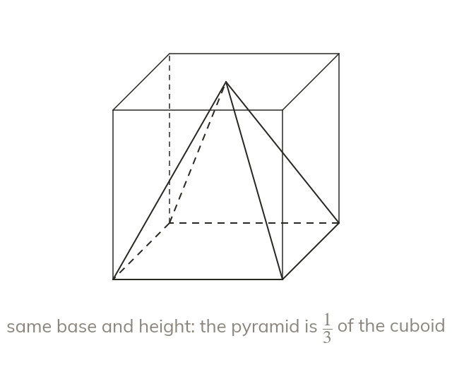

A pyramid is a third of its prism
A pyramid fills one third of the prism on the same base. So × base area × height.
A pyramid fills exactly one third of the prism with the same base and the same perpendicular height. So its volume is × base area × height.